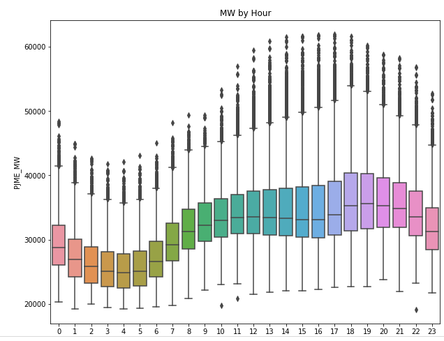
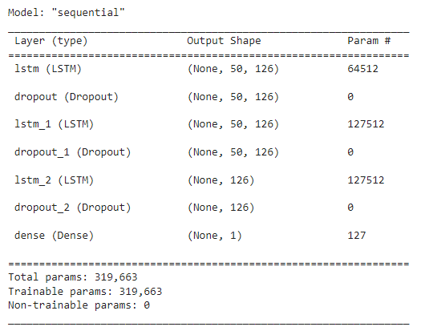

This a Challenger where we work on Alura Voz, a telecom operator company that needs helps from data analyst and scientist team to support sales team to build customer loyalty.
Me as member of Data Analytics team will analyze evasion rate also known as Churn Rate and develop a Machine Learning Model to predict churn and help sales team to improve customer loyalty.

In this Project we use 10 years dataset of American Eletric Power (AEP) to Forecast
next year energy consumption by using Python Libraries such as Pandas, Numpy to clean
and organize our data, Matplotlib and Seaborn to Visualize and support Exploratory Data Analysis,
Scikit Learn and XGBoost to prepare our Machine Learning Models to Forecast and solve our problem.

I'm going to use quote history since they release in Mar 12th of 1986 until Oct 24th of 2022 and use Long-short Term Memory model (LSTM Model) to predict future quote prices. Dataset can be found on Yahoo Finance. Long-short term memory is a special kind of recurrent neural network that is capable of learning long term dependencies in data.

In this SQL case I build the sale per client report to compare if total sales in a certain month overcame or not the maximum sales per client (there is a limit sales in the database).
It's a dataset loaded on Microsoft SQL Server Alura advanced course and it about a fictional brazilian company named "Suco de Frutas", which sells differents juice flavours in bottles and cans for many different customers.